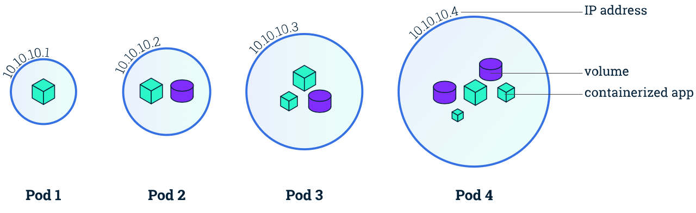
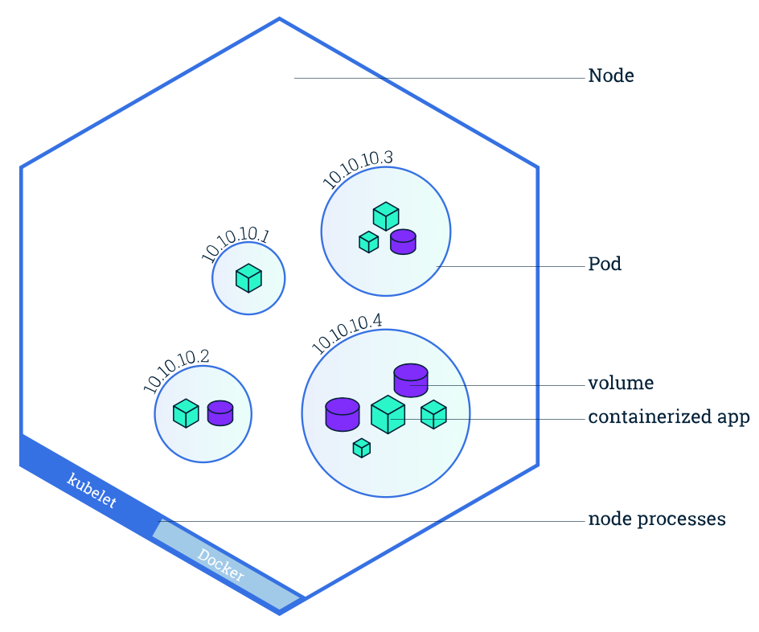

Kubernetes
Pods:
- Will run always. Their job is to run. Pods are the basic unit for
running containers on Kunernetes.
- A Pod also provides a way to set environment variables,Mount storage
and feed other info into a container.
- In k8s, pods are responsible for running containers. Every pod will
have atleast one container, and controls its execution.
A Pod is a Kubernetes abstraction that represents a group of one or
more application containers (such as Docker or rkt), and some shared
resources for those containers. Those resources include:
- Shared storage, as Volumes
- Networking, as a unique cluster IP address
- Information about how to run each container, such as the container
image version or specific ports to use

* Containers should only be scheduled
together in a single Pod if they are tightly coupled and need to share
resources such as disk.
Nodes:
A Pod always runs on a Node. A Node is a
worker machine in Kubernetes and may be either a virtual or a physical
machine, depending on the cluster. Each Node is managed by the Master. A
Node can have multiple pods, and the Kubernetes master automatically
handles scheduling the pods across the Nodes in the cluster. The Master's
automatic scheduling takes into account the available resources on each
Node.
Every Kubernetes Node runs at least:
- Kubelet, a process responsible
for communication between the Kubernetes Master and the Node; it
manages the Pods and the containers running on a machine.
- A container runtime (like Docker,
rkt) responsible for pulling the container image from a
registry , unpacking the container, and running the application.

Architecture:
Kubernetes
has worker nodes and a master
node usually. Master node manages all the worker nodes.
Kubernetes cluster can have upto 5000
worker nodes. Master nodes also can be more than 1, for high
availability.
Worker nodes
are nothing but a VM or a Physical machine or an instance on cloud. All
worker nodes contribute their resources such as Compute, Memory and
Storage for cluster which hosts applications with HA and fault tolerant.
Worker nodes are also called as miniants.
POD:
- pod a scheduling unit in Kubernetes. Its like a VM in virtual
environment just for understanding.
- Each pod consists of one or more containers. In most cases there
will be one container.
- There are scenarios where we may need to run one or more
depending containers in a pod.
- By using a pod, we can deploy multiple inter dependent containers
together.
- We interact and manage containers through pod.
- Containers are run time environments for a containerized
applications
Master Node:
- Responsible for managing whole cluster
- It monitors the health of all worker nodes, It has the
configuration of cluster and worker nodes
- When one worker node fails, it moves work load of that node to a
healthy node where resources are available
- Scheduling, provisioning, Controlling and exposing API to the
nodes/clients
Components
of Master node:
- It co ordinates all the activities inside the cluster and
communicates with the worker nodes to keep apps running
- When you install Kubernetes on a system, four master components of
K8S Master will be installed. they are:
- API Server: Every operation
on k8s cluster goes through API Server. So to interact with this
API server, we use a tool called kubectl
or using UI. Kubectl is written in GO language.
- Schedular: Schedules the
pods across multiple nodes. Based on the configured
file(cpu,mem,disk type..) defined, schedular schedules the
pods on the nodes where the mentioned criteria met.
- Control Manager: There are
4 controllers(node controller,
replication controller,end point controller and service
accountant token controller)inside this control manager.
These controllers on a whole responsible for the health of
cluster.
- etcd: This is a distributed
light weight key value database developed by coreOS. This central
database stores the current cluster state at any point of time.
Any component of k8s can query etcd to get the state of cluster.
Worker Node Components:
- Worker node is a VM/Physical Machine/Cloud Instance
- Worker node has components like Kubelet
and KubeProxy
- Kubelet is the primary node agent that runs on each worker node.
It takes the pod-spec on the Master and ensures the containers are
running and healthy. If the kubelet notices any issues with pods
running on worker node, it restart it on the same node. If the issue
is with same node, Kubernetes master will detect the node and
transfer the work load to another available healthy node. If its
unable to recreate the pod, pod will die. so its recommended to use
replica sets
- Kubeproxy is a critical
service inside worker node. It maintains the network configuration.
It maintains the distributed network across all nodes, pods and
containers and also exposes the services to the outside world. This
is the core networking component inside cluster.
ReplicaSets:
- are a type of low level type in Kubernetes.
- ReplicaSets are same kind of pods running at given replicaset
count.
- If you want same kind of pods at a count of 4, ReplicaSet ensures
4 identically configured pods are running all the time.
- If one of it drops off, ReplicaSet will create new one to match
the count of 4.
Secrets:
- are base64 encoded at rest(when not attached to any pod) and
stores non public information
- Usually data stored in Secrets is passwords, tokens, certificates
and any confidential data
- When attached to a pod as file or ENV variable, they will
decode(expand) on their own
- So secrets can be attached to a pod as a file or as an environment
variable at runtime
- Extra encryption also can be added to secure our data
Deployment:
- Higher level abstraction which controls deploying and maintaining
set of pods
- In background it uses ReplicaSet to keep pods running
- Used to deploy, update and scaling a set of pods in the cluster
- Offers roll outs and rollbacks and also rollouts can be paused
DaemonSets:
- Ensures a copy of pod is running on every node in the cluster
- If the cluster grows or shrinks with more/less nodes, DaemonSet
ensures a copy of pod is running on all the nodes.
Troubleshooting with kubectl:
- kubectl get - list resources
- kubectl describe - show
detailed information about a resource
- kubectl logs - print the logs
from a container in a pod
- kubectl exec - execute a
command on a container in a pod
Practice the above command here!
$ kubectl describe pods |more
On the
Master Node following components will be installed
API Server – It provides kubernetes API using Json
/ Yaml over http and it stores states of API objects in etcd
Scheduler – Schedules tasks such as container
launching on available nodes by checking resources on them
Controller Manager – Monitors and make sure pods state
as per configuration.
etcd – It is a Key value pair data base. It stores
configuration data of cluster and cluster state.
Kubectl utility – It is a command line
utility which connects to API Server on port 6443 and is used create pods,
services..etc.
On
Worker Nodes following components will be installed
Kubelet – It is an agent which runs on every worker node,
it connects to docker and takes care of creating, starting, deleting
containers.
Kube-Proxy – It routes the traffic to appropriate
containers based on ip address and port number of the incoming request. In
other words we can say it is used for port translation.
Pod – Pod can be defined as a multi-tier or group of
containers that are deployed on a single worker node or docker host.
Issues
encountered during kubeadm init:
1. swap
should be off. Get this using #swapoff -a
2.
No.of CPU's must be 2 or more. Increase no.of CPU's to 2 in VM Settings
3.
[ERROR FileContent--proc-sys-net-ipv4-ip_forward]:
/proc/sys/net/ipv4/ip_forward contents are not set to 1
- echo "1" > /proc/sys/net/bridge/bridge-nf-call-iptables
- echo '1' > /proc/sys/net/ipv4/ip_forward
4. If kubectl is unable to connect on port
6643, use #swapoff -a and #systemctl restart kubelet
5. You can also use to troubleshoot kubectl service: #journalctl -xeu
kubelet
6. Some commands:
* kubectl get pods --all-namespaces
* docker container ls
* kubectl get namespaces
* kubectl version
* kubectl conig view
* kubectl cluster-info => Gives master and dns information
* kubectl cluster-info dump => dump cluster info to standard output
* docker rm -f $(docker ps -aq) => to make sure all containers are
deleted and then restart kubelet service
* kubectl describe node => Gives entire info of any node including
master
* kubeadm token list=> to get the kubeadm init tokens. These tokens are
used to add nodes to the master.
* kubeadm join --token abcdef.1234567890abcdef
--discovery-token-unsafe-skip-ca-verification 1.2.3.4:6443
* kubectl label node node1 node-role.kubernetes.io/worker=worker => If
role is missing when list nodes, this is used to name the role
KUBECTL: kubectl is a command line interface
for running commands against kubernetes clusters. kubectl looks for a file
located at $HOME/.kube directory.
kubectl <command> <type>
<name> [flags]
COMMANDS: CREATE, GET, DESCRIBE, DELETE,
ANNOTATE,API-Versions,Apply,Attach,autoscale,cluster-info,config, create,
delete, describe, diff, edit, exec, explain, expose, get, label, logs,
patch, port-forward, proxy, replace, rolling-update, scale, run, stop,
version
TYPE: POD, SERVICES, INGRESS, JOBS, CRONJOBS
NAME: POD NAME/Resource Name
FLAGS: -f for file, -s or --server to specify server:port,
CheatSheet
for kubectl
EKS -
Common Kubernetes Resources
The
most common resources you will use in EKS are:
Pod: Smallest deployable unit, it can contain one or more containers
Deployment: The typical way to deploy an app. In a deployment, you define
which pod/containers you want, and the number of replicas Services:
Services are used to create DNS endpoints in kube-dns, it gives us a
similar functionality to consul
Ingress: An ingress rule is meant to be used by an ingress controller
(like traefik) to help it decide how to act upon a request. Example, you
can define an ingress path based ingress rule that send all /v1/gaia
requests to the gaia service (see above)
ConfigMap: A configmap allows us to create configuration files and mount
them in a pod. An example of this would be logback.xml, you can create a
configMap with logback.xml and mount it in the pod. Since the configMap is
a Kubernetes object, it's not necessary to have that file in the host
itself (understand mounting to the pod VS mounting to the host)
Job: A task that is supposed to run only once
CronJob: A scheduled task, similar to Chronos in the Mesos world
Secret: Similar to configMaps, but these are encrypted and are mounted at
pod run-time
Namespaces: Allows us to separate workloads. In practice, it's used as an
environment
EKS
- How to add Private Docker Repo Credentials
In order for pods to be able to download docker images from our private
docker image repo, you need 2 things:
- Define a secret containing the credentials
- Mount the secret in the pod.
Define a secret containing the credentials
$
kubectl create secret docker-registry regcred --docker-server=<repo
url> --docker-username=<user> --docker-password=<password>
--docker-email=<email>
Make
sure your pod template spec includes
imagePullSecrets:
- name: regcred
EKS
- Common Commands
This wiki is meant to show the most typical commands you will use when
communicating with Kubernetes or Helm
Kubernetes commands
A very useful command is "get", which is used to provide a list of a
specific resource in Kubernetes. The most common
resource
types in kubernetes are:
- pod
- services
- ingress
- jobs
- cronjobs
In order to get a list of any of these, use the following command syntax:
$kubectl
get <resource> -n <namespace>
As a
note, namespace = environment(like Dev,
Prod,Stage)
A
couple of examples:
$kubectl
get pods -n dev => get pods in dev namespace
$kubectl
get svcs -n dev => get services in dev namespace
Install
a Helm Chart:
$helm_
install <helm chart> --version <chart version> --name
<release name> --namespace <environment>
ex:$helm_
install zt-default\gaia --version=0.9.1-fdszdsadersdfxghdsdaz
--name=gaia-dev --namespace=dev
Upgrade
a chart, Install if its not there
Syntax:helm_
upgrade --install <relase name> <Helm Chart>
--version=<chart version> --namespace=<environment>
ex:$helm_
upgrade --install gaia-dev zt-default\gaia
--version=0.9.1-fdszdsadersdfxghdsdaz --namespace=dev
Get
available revisions for a given release
helm_
history <release name> <revision>
ex:helm_
history abacus-daily-metrics-dev
Do
a roll-back
helm_
rollback <release name> <revision>
ex:
helm_ rollback gaia-dev 2
DevOps Online | Classroom Training|Contact
9390-999-614